ドラッグでキャンバスを動かし、ホイール/ピンチでカメラを拡大縮小。カードをタップで選手詳細、# やVIEW MOREで関連ページへ。
言葉は監督・選手のインタビュー等からの抜粋です。出典: JFA公式 / Number / ゲキサカ / サッカーキング / Wikipedia / スポーツナビ 取得日 2026-06-18
出場数・得点は招集発表時点の参考値。データは samurai_blue_2026_members.xlsx で管理しています。
© Japan Football Association. データ・写真・言葉の権利は各権利者に帰属します。